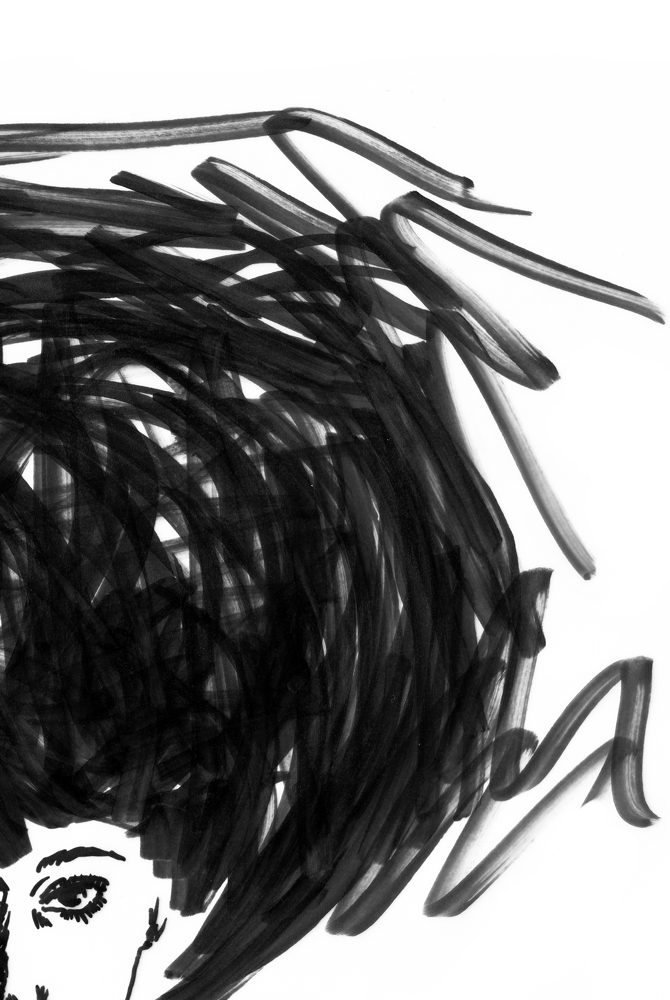

If you want to see more,
please come again in a few weeks.
Ann-Kathrin Ganzhorn
akganzhorn@gmail.com – media design
slide back

about
Ann-Kathrin Ganzhorn
I'm a designer from Germany,
currently living in Stuttgart.
In October I graduated from DHBW Ravensburg,
where I studied media design and worked at
schwarzspringer Werbeagentur in Stuttgart
(cooperative study, three month periods for three years).
With a background in advertising at schwarzspringer,
I plunged into digital and interaction design in my
last university semesters and also wrote my
bachelor thesis about it. Now I want to take a deeper dive
and improve my skills in that field.
If you want to know more about me, my work or just take a coffee,
feel free to contact me on akganzhorn at gmail.com.